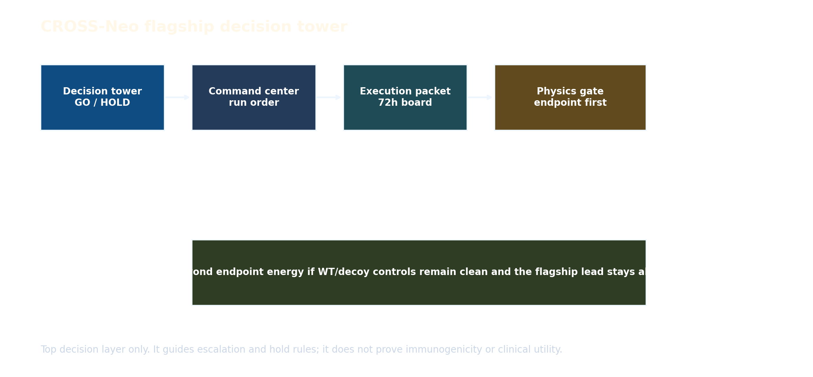

Boundary
This tower coordinates escalation. It does not prove immunogenicity, activation, killing, or clinical utility.
Decision Flow

Go / Hold Board
| lead | peptide | hla 4digit | physics priority score | preclinical readiness | physics tier | go no go state | current action | escalation branch | 24h action | 72h action | abort condition |
|---|---|---|---|---|---|---|---|---|---|---|---|
| TP53_R175H_HLA_A0201 | HMTEVVRHC | HLA-A*02:01 | 0.839 | 0.935 | P0_FLAGSHIP_PHYSICS | GO_ENDPOINT | prepare WT/decoy-controlled HLA stability and binding setup | PMF/FEP hold until endpoint energy and WT/decoy separation remain favorable | prepare presentation gate controls and QC if GO_ENDPOINT | run endpoint energy; only then unlock multimer/activation branch | WT or decoy does not stay separated from mutant on endpoint gate |
| KRAS_G12D_HLA_C0802 | GADGVGKSAL | HLA-C*08:02 | 0.656 | 0.797 | P0_FLAGSHIP_PHYSICS | HOLD_ENDPOINT | prepare WT/decoy-controlled HLA stability and binding setup | do not escalate beyond endpoint physics | recheck model/assay compatibility and hold physics spend | hold until a cleaner assay or structure signal appears | pairing or TCR model becomes unstable |